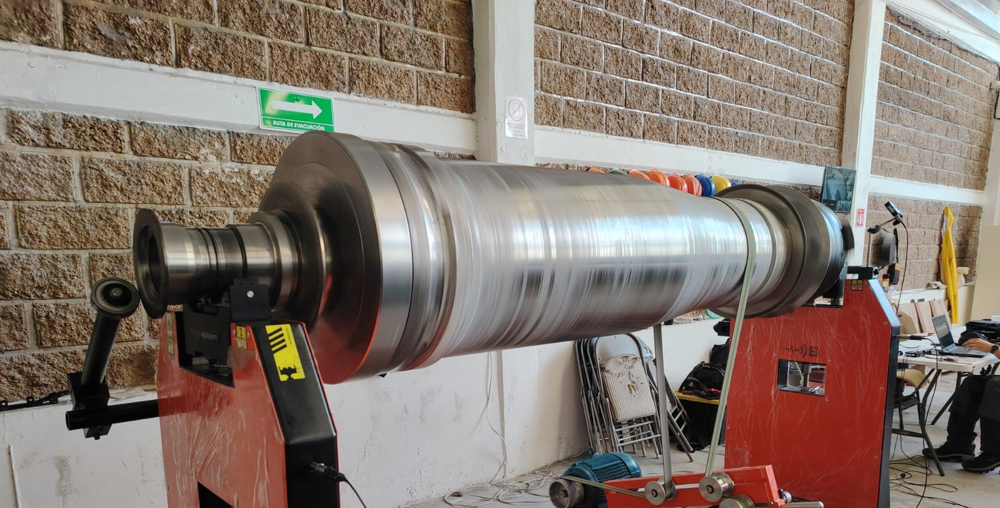
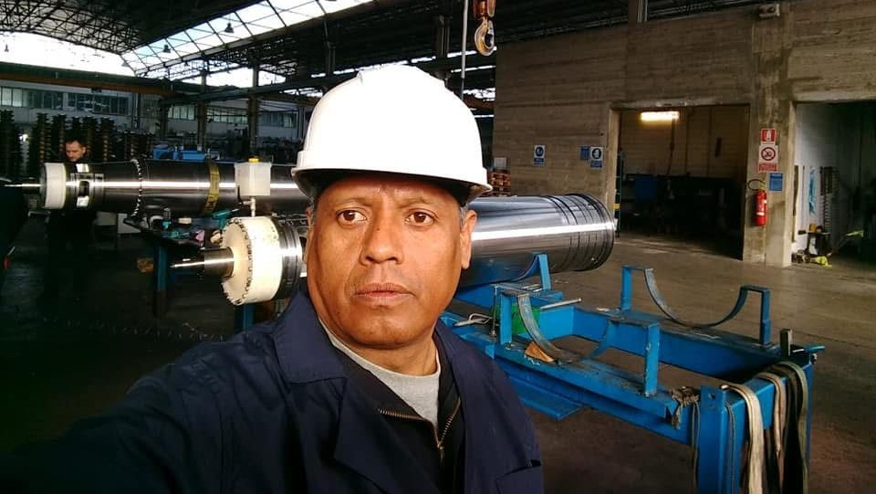
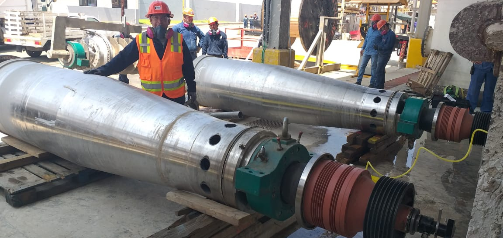
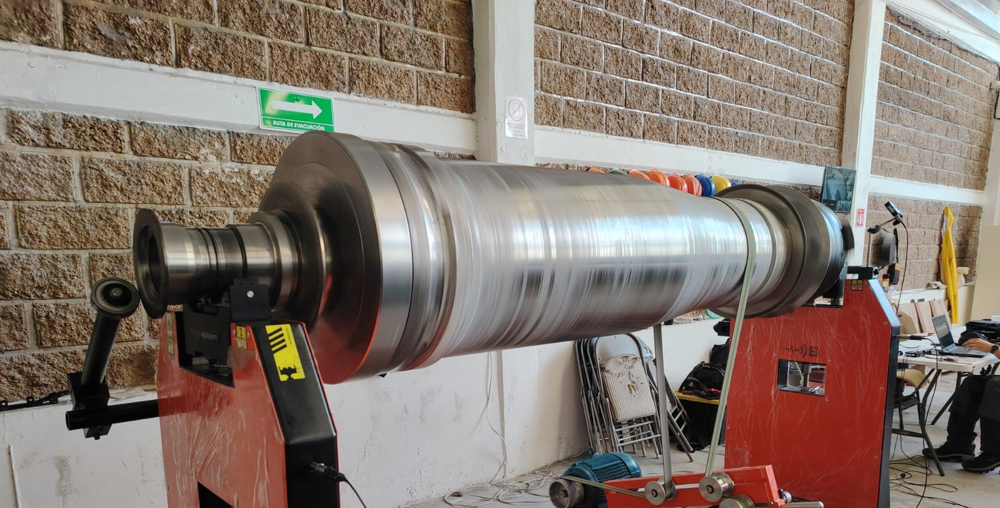
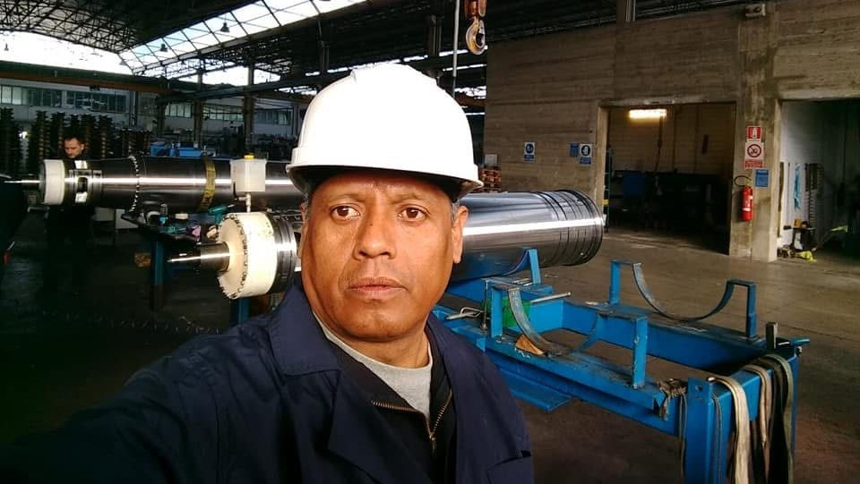
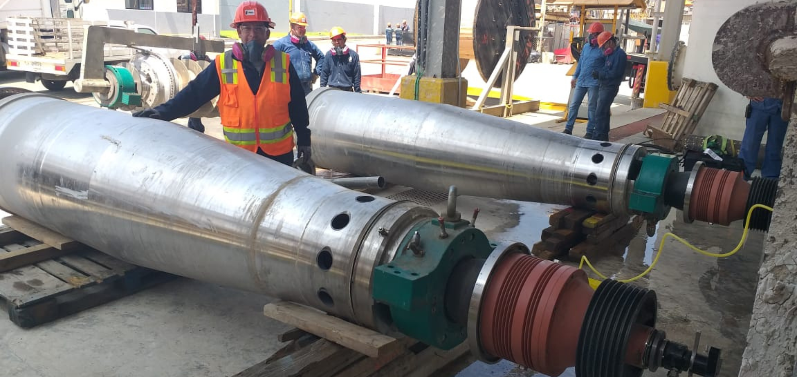

Somos una empresa joven en el mercado, pero con una sólida trayectoria respaldada por años de experiencia en el sector, lo cual nos permite garantizar la satisfacción de nuestros clientes en cada uno de nuestros servicios. Contamos con un equipo de técnicos altamente capacitados y comprometidos, quienes respaldan nuestro trabajo y aseguran la entrega de resultados con los más altos estándares de calidad.
 





❮
❯